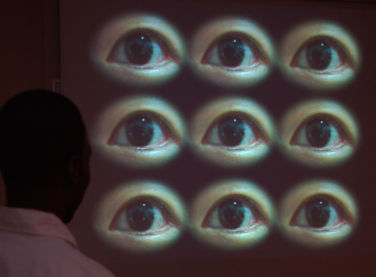
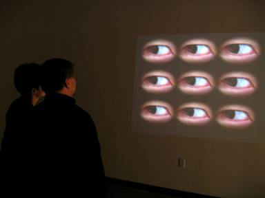

2006 May, Interactive Installation
Detailed Picture


Museum Documentation
I am always aware that I am a foreigner. When I speak my accented English, wear my clothes, choose foods to eat—these are all ways I notice that I have a different style than native-born Americans. This social incongruence became the motivating factor for my piece Gaze , which consists of a set of my nine eye balls projected onto a large screen. The video clips of the eyes are linked to a video motion sensor and MAX/MSP program in the computer; as the viewer shifts around, the pupils follow her every movement. The multiplicity of eyes brings an alien-like feel to the installation and the large screen overwhelms her. My attempt is to make the viewer feel as out-of-place and uncomfortable as I often feel; however, my decision to use images of eyes considers themes not unique to my own experiences.
Exhibition
2008 Jul, Viridian Artist Chelsea, NYC(curator. Elisabeth Sussman at the Whitney Museum of Art)
2008 Jan, Kinetic Image , Target Gallery, Virginia (curator. Patrick Lichty)
2005 Oct, Space at Alice, RI
2005 Oct, Pixilations V.2 (Firstworksprov Festival), RI
Award
2008 Jul, 1st Winner ($500), 19th National and International Juried Exhibition, Viridian Artist Chelsea, NYC
2008 Jan, 3rd Winner, Kinetic Image , Target Gallery, Virginia